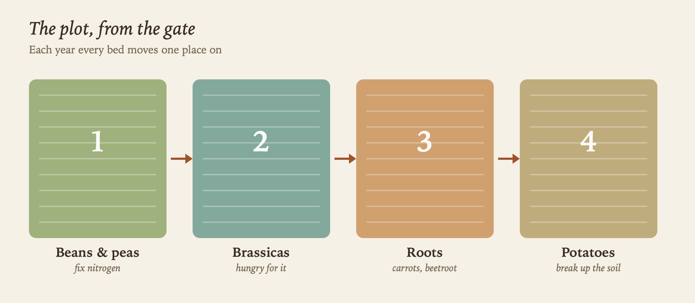

The Allotment
Plot 14 at the Hollins Lane allotments: ten rods of clay soil, a shed that leans, and a water butt that’s never quite full. I took it on in March.

The four beds follow a crop rotation, so nothing grows in the same place two years running. Margaret has the plot next door.
The shed
Tools, seed tins and a kettle. The roof needs felting before winter: it’s on the list in Jobs for October.
The compost bays
Two bays behind the shed, made from old pallets. See Compost.